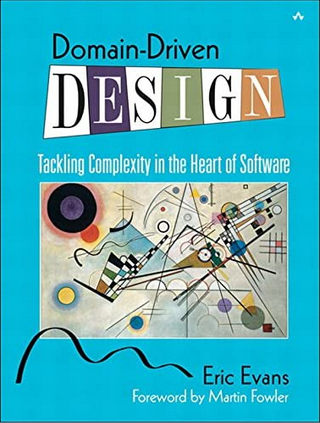
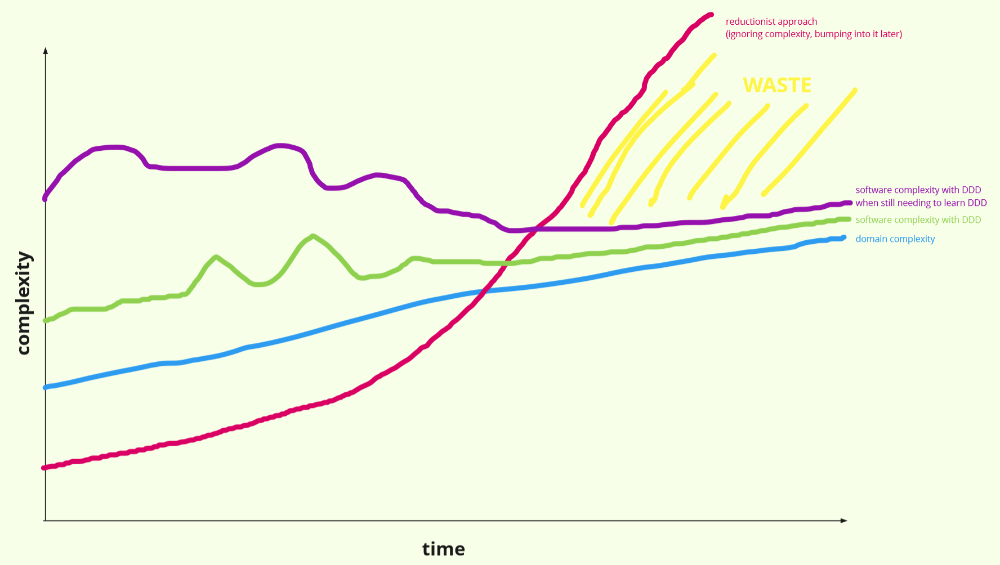
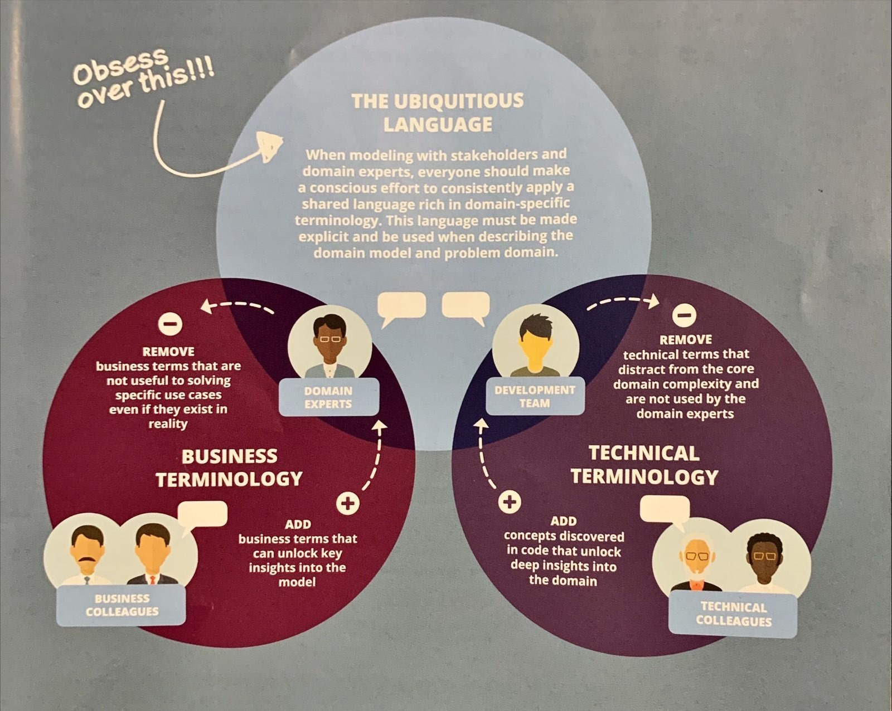
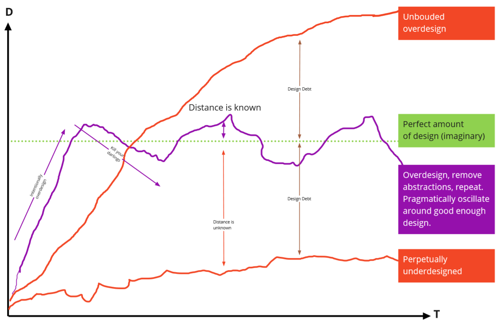
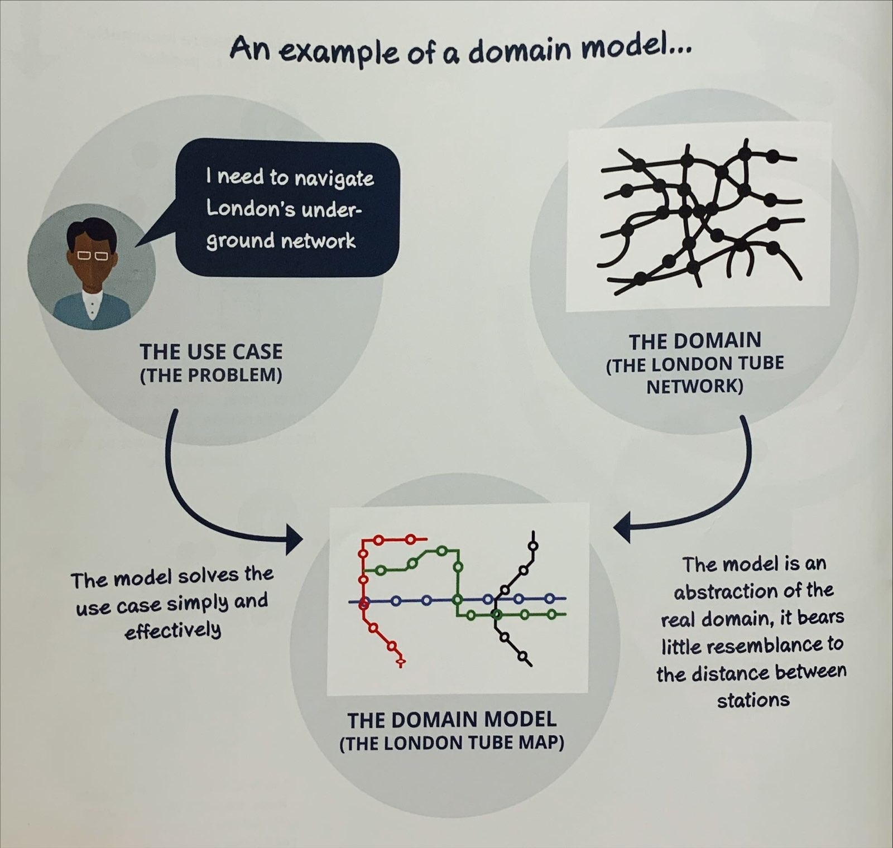
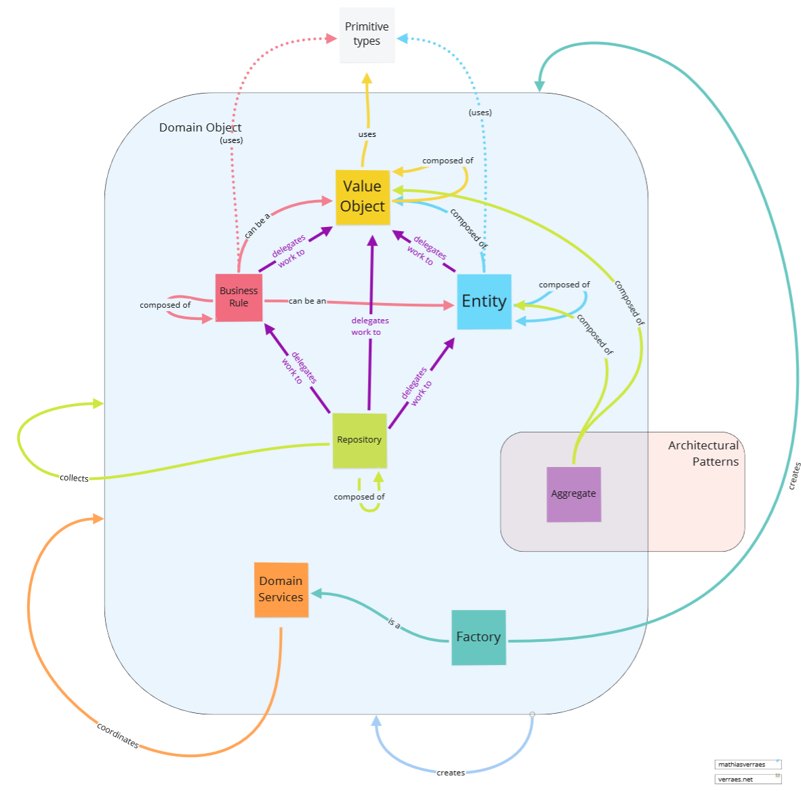
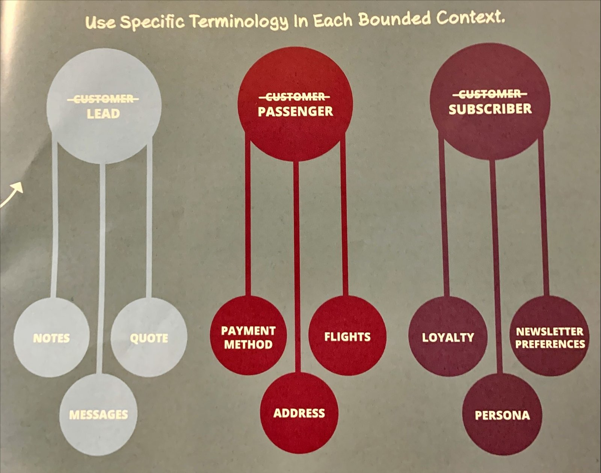

Intro to DDD
by Tin Anh Nguyen
Domain-Driven Design
- Coined by Eric Evans
- Presented in "The Blue Book"
- Published in 2003

Boils down to a single idea
The implementation model should reflect the domain model
Ubiquitous Language
- Shared language
- Communicate with experts
- Less misunderstandings
Knowledge Sharing
- Model captures insights
- Learn domain more quickly
- Shorten on-boarding time
Clarity
- Discover new opportunities
-
React to changes more easily
Productivity Over Time

Continuous Refactoring
- Talk to domain expert
- Crunch knowledge
- Refine model
- Discover issues
- Repeat the process
Continuous Refactoring

Continuous Refactoring

Continuous Refactoring

Knowledge Crunching Techniques
Modeling techniques
- Tactical Design
- Strategic Design


Supporting Foundation
- Object-Oriented Programming
- Hexagonal Architecture
- Event-Driven Architecture
Always
Unless you're creating a throwaway application
Team Might Not Do DDD
Doesn't mean that you can't
Thank you for listening
Join us at
#learn-ddd
to learn more!